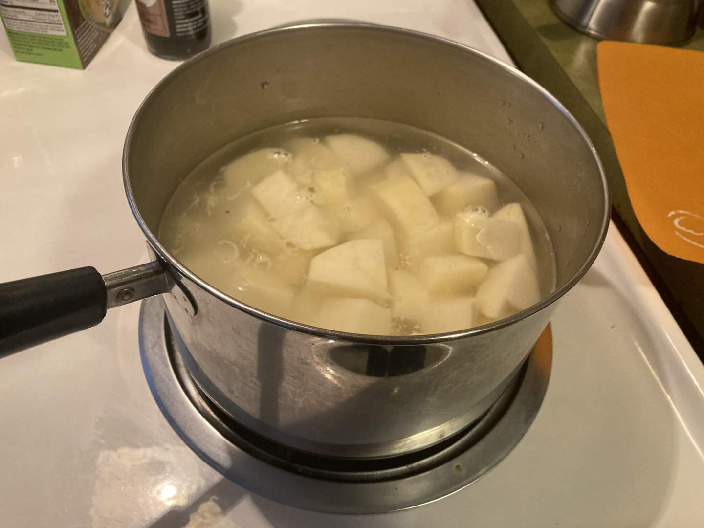
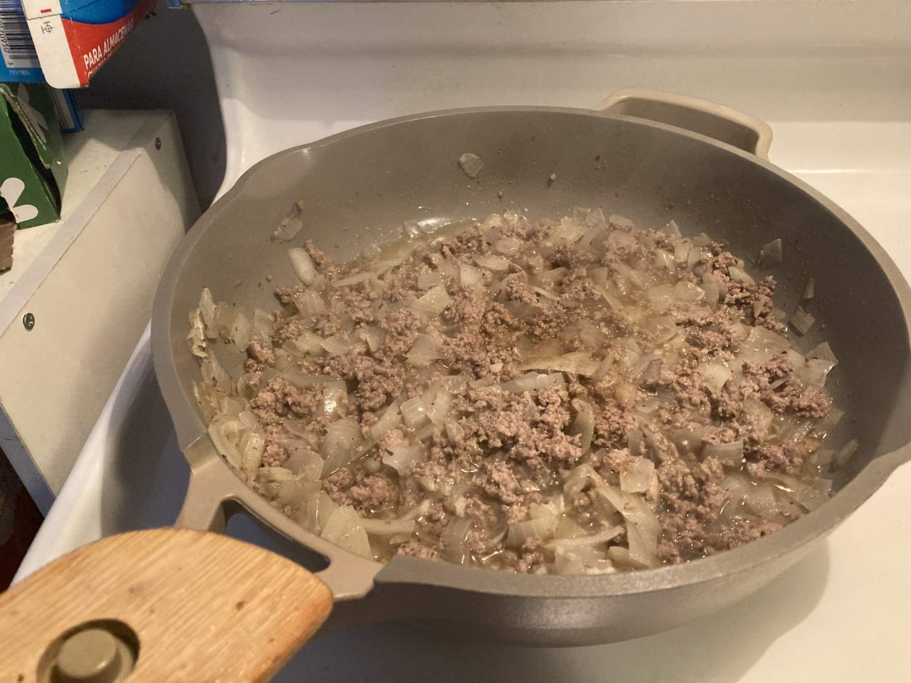
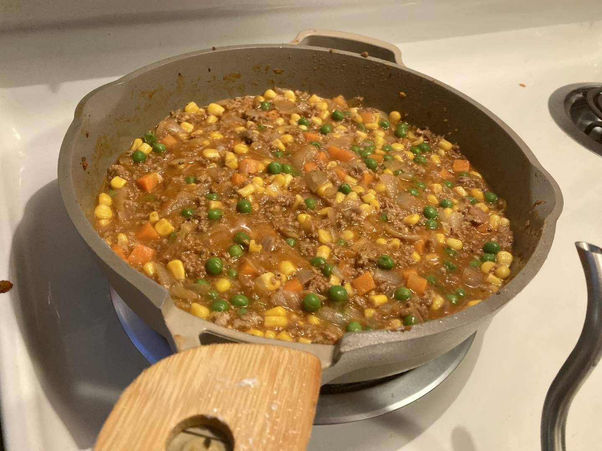
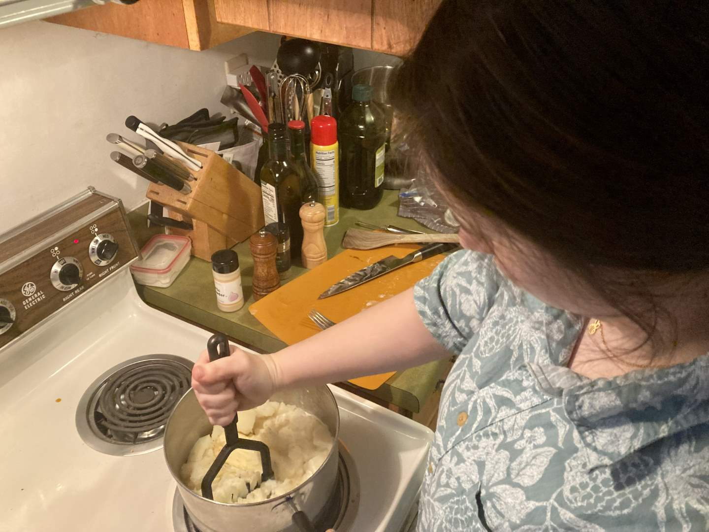
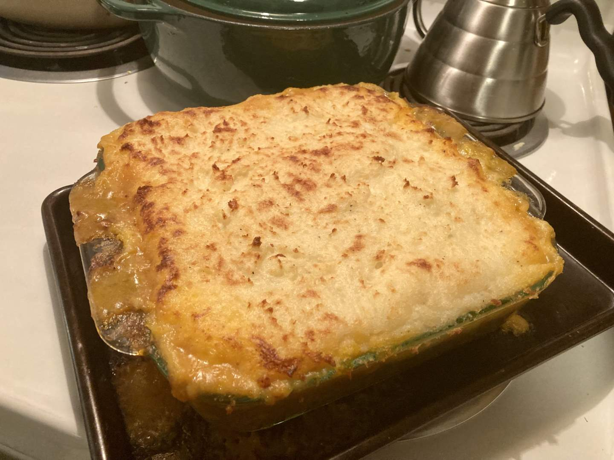
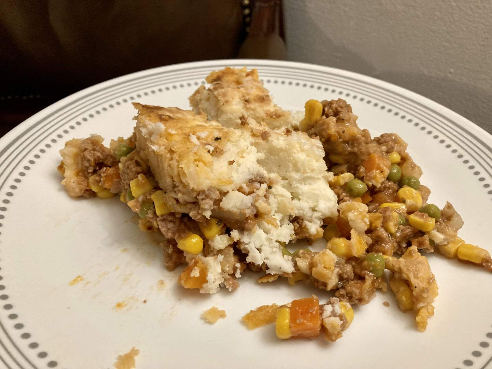

Pie 32: Gobbler
2024-02-01Recipe from The Wholesome Dish.
Taste:
Difficulty:
Vibes:
Suggested pairing: salad and bread
As fresh college graduates and married folk, we are often asked how we meal plan for the week. We typically always stock “necessities,” like various vegetables, cheeses, pasta, rice, butter, and potatoes; other ingredients are acquired as needed for specific recipes we want to make. We usually make family-sized servings of meals, both to get leftovers and to use up these ingredients. This week I latched onto the idea of making a shepherd’s pie, a rustic casserole/pie that earns its name through the lamb included in the filling.
The filling of shepherd’s pie is closely related to that of chicken pot pie. Yet rather than being covered with a pastry crust, it is topped with mashed potatoes that develop a crusty texture during baking. Not only was this our first time making a shepherd’s pie, but this was also my first time making mashed potatoes from scratch! It was very satisfying to mash and stir those potatoes together while a whole stick of butter melted into it. Something about that experience made me think “This is the good life.”
The filling of the pie consisted of a sauteed onion, ground turkey, Italian seasoning, vegetable broth, peas, carrots, and corn. We chose to use ground turkey rather than beef or lamb because a) we already had it on hand and b) we are trying to reduce our red meat consumption. But if the lamb is what makes this a shepherd’s pie, what to call this dish without that key ingredient??? As far as we know, there is no good name for someone who raises turkeys, so this presented a chance to get creative. My first thought was to call it a gobbler-gobbler pie, for one who eats the turkeys (aka the gobblers) can be said to gobble them! As amusing as this term was, Ben and I decided that one ‘gobbler’ is sufficient for the title of this pie.
After the filling and mashed potatoes were both prepared separately on the stovetop, we poured the filling into a 9x9 dish and carefully spooned the potatoes on top of it. The final step to bring these components together was a final bake in the oven. When done baking, we topped the potatoes with shredded parmesan cheese just before serving.
Thankfully, the pie held its shape decently well when sliced--the wetter filling did not completely spill out. It was a pleasant, comforting meal; not so bizarre that the children of the family visiting for dinner disliked it, but also not so simple as to be disappointing. We are never surprised when a first attempt can be improved upon. Our guests brought along a delightful salad with chicken, bean sprouts, and croutons; which provided a light balance to the heavier gobbler pie. This was a great casserole/pie (especially as leftovers). I can see us making it in the future, perhaps with a different recipe.
